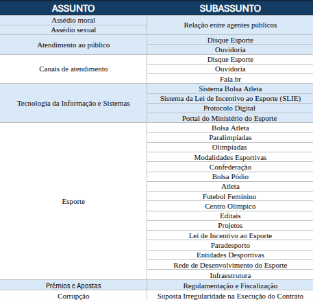

Nova Árvore de Classificação da Ouvidoria
Otimização de Usabilidade, triagem ágil e estruturação de contextos multidimensionais para inteligência de dados e extração analítica de denúncias no Ministério do Esporte.
Foco em Usabilidade
Classificação intuitiva para o cidadão e triagem padronizada e sem dubiedade para o ouvidor.
Funil Estruturado
Hierarquia direta (Assunto → Subassunto) combinada a TAGS Universais transversais.
Inteligência em Denúncias
Filtros precisos para extração de relatórios gerenciais e encaminhamento rápido às secretarias finalísticas.
As Dores da Falta de Usabilidade na Classificação
Como a ausência de uma árvore contextualizada prejudica a extração de relatórios e a apuração de denúncias no Fala.BR.
-
✕
Subjetividade e Triagem Ambígua Sem subassuntos delimitados, manifestações semelhantes recebem classificações distintas dependendo de quem opera a triagem.
-
✕
"Apagão" Analítico em Denúncias Dificuldade em rastrear se uma denúncia de fraude envolve Bolsa Atleta, Lei de Incentivo, convênios ou conduta funcional específica.
-
✕
Extratificação Manual de Relatórios Necessidade constante de leitura individual de processos para produzir relatórios gerenciais, atrasando respostas a órgãos de controle (CGU, TCU).
-
✕
Lentidão no Encaminhamento Finalístico Falta de identificação imediata da secretaria ou unidade responsável (Coger, CE, SNAEDE, SNPAR, SNE, etc.).
-
✓
Assunto → Subassunto Estrito A escolha do Assunto restringe e direciona automaticamente apenas os Subassuntos pertinentes, eliminando erros humanos.
-
✓
TAGS Universais Transversais Possibilita cruzar dimensões: qual modalidade, qual confederação, qual tipo de irregularidade e qual unidade interna sem engessar a árvore.
-
✓
Relatórios Executivos Automatizados Filtros dinâmicos no Fala.BR: "Denúncias de Suposta Manipulação de Resultados no Futebol" ou "Irregularidades em Convênios de Infraestrutura" a 1 clique.
-
✓
Gestão Preventiva e Governança Identificação antecipada de reincidências para subsidiar decisões do Ministro e das Secretarias Nacionais.
Onde a Árvore Antiga Falhava vs. O que a Nova Corrige
Evidências práticas de gargalos que comprometiam a triagem e geravam dados inconsistentes no Fala.BR.
• Suposta Irregularidade na Execução do Contrato
Problema grave: Se a denúncia fosse de convênio com ONG esportiva, desvio em federação, nepotismo ou conduta de agente público, não havia onde classificar! O dado era forçado ou virava "limbo".
- • Contratos e Contratações Públicas
- • Parcerias, Convênios e Repasses
- • Gestão de Recursos Públicos
- • Conduta e Benefícios Indevidos
Misturava no mesmo nível de subassunto atores isolados (Atleta), órgãos (Confederação), equipamentos físicos (Centro Olímpico) e eventos (Olimpíadas, Paralimpíadas).
Concorria e gerava duplicidade com as tags.
Subassuntos definem as linhas de ação e programas do Ministério (Atletas, Entidades Desportivas, Esporte Seguro, Infraestrutura Esportiva, Competições e Eventos).
Atributos específicos (ex: qual confederação ou modalidade) vão para as TAGS.
- • Erros de digitação em produção:
Infrat - • Tags de teste não excluídas:
teste - • Ações pontuais obsoletas:
Copa 2027,Minuto p/ o Esporte - • Lista corrida com 100+ itens sem categoria.
Catálogo auditado, higienizado e classificado em 12 dimensões lógicas (Entidades, Modalidades, Denúncias, Unidades MESP, Atores, Status).
Registro Fotográfico: Tabela Original da Árvore Antiga

Registro da parametrização anterior cadastrada no sistema Fala.BR do Ministério do Esporte.
O Funil de Filtragem e Refinamento de Dados
Como a manifestação é afunilada de forma progressiva: do macrocontexto ao dado analítico acionável.
Delimita a grande área de atuação do Ministério (ex: Esporte, Corrupção, Assédio, TI, Apostas)
Restrito ao assunto escolhido (ex: Bolsa Atleta, Contratos e Contratações, Infraestrutura)
Independentes (Modalidade, Tipo de Irregularidade, Unidade MESP, Entidade, Status)
▸ O Princípio da Dependência Estrita
Diferente de sistemas planos, o Subassunto só existe atrelado ao seu Assunto. Se o usuário seleciona "Corrupção", ele nunca verá subassuntos de "Canais de atendimento", evitando ruído cadastral.
▸ O Poder das TAGS Universais
As TAGS são desacopladas da árvore. Isso significa que tags como Futebol, Suposta Irregularidade ou Coger podem ser aplicadas em qualquer manifestação, permitindo cruzar dados analíticos em qualquer dimensão.
Subassunto: Bolsa Atleta
Tags: [Atletas] [Atraso] [SNE]
→ Relatório imediato para a Secretaria Nacional de Excelência Esportiva
Teste a Nova Estrutura na Prática
1 1. Selecione o Assunto
8 Assuntos2 2. Subassunto Vinculado
Depende do AssuntoNenhum Assunto selecionado
Clique em um assunto ao lado para carregar seus subassuntos específicos.
3 TAGS & Inteligência
TransversaisOs 8 Grandes Assuntos e seus Subassuntos
Mapeamento temático abrangente para atender todas as tipologias de manifestações do Ministério do Esporte.
- Relação entre agentes públicos
- Relação entre agentes públicos
- Disque Esporte
- Ouvidoria
- Disque Esporte
- Ouvidoria
- Fala.BR
- Sistema Bolsa Atleta
- Sistema SLIE (Lei Incentivo)
- Protocolo Digital
- Portal do MESP
- Regulamentação e Fiscalização
As 12 Famílias de TAGS Universais
Permitem cruzar qualquer assunto com entidades, modalidades, tipos de denúncia e órgãos competentes.
Casos Práticos: Da Denúncia ao Relatório Fala.BR
Veja como manifestações complexas passam a ser classificadas com precisão cirúrgica.
"Cidadão denuncia que recursos repassados para a reforma de um centro olímpico municipal estão sendo desviados pela entidade executora sem prestar contas."
"Torcedor aponta indícios de manipulação de resultados em partida de campeonato regional ligada a sites ilegais de apostas esportivas."
"Servidora relata perseguição e constrangimento sistemático por parte de chefia imediata no ambiente de trabalho do ministério."
"Atleta paralímpico informa atraso de parcelas do benefício decorrente de inconsistência cadastral bancária no sistema."
Cruzamentos Analíticos: Do Texto Livre aos Dados Estruturados
Como a classificação por TAGS elimina a leitura manual e gera relatórios executivos instantâneos.
Com Tags padronizadas, o Fala.BR consolida rankings sem duplicidades:
Descobre por qual motivo a entidade é citada:
Identificação de vulnerabilidades setoriais:
| Modalidade | Atraso | Irregul. | Assédio |
|---|---|---|---|
| Futebol | 30 | 22 | 8 |
| Atletismo | 18 | 10 | 3 |
| Natação | 12 | 6 | 2 |
Diferenciação Crucial de Usabilidade: Assédio no Trabalho vs. no Esporte
→ Assunto: Assédio moral / sexual | Sub: Relação entre agentes públicos | Encaminhamento: Comissão de Ética / Coger.
→ Assunto: Esporte | Sub: Esporte Seguro | Tags: Atletas, Clube, Assédio Sexual | Encaminhamento: Políticas de Proteção ao Esporte.
Diretrizes de Governança & Pontos para Validação na Reunião
Regras para garantir integridade estatística e itens abertos para alinhamento com as Secretarias.
🛡️ As 4 Regras de Ouro para Uso das TAGS
-
1
O que NÃO vira Tag (Campos Nativos Fala.BR) Não criar tags para Denúncia, Reclamação, Solicitação, Elogio, Sugestão. O Fala.BR já possui campo próprio para o tipo de manifestação.
-
2
Padronização Canônica de Entidades Cada entidade esportiva deve ter um único nome oficial (ex: apenas
Confederação Brasileira de Futebol - CBF, evitando variações como CBF solto). -
3
"Suposição" vs. "Fato Comprovado" Usar
Suposta Irregularidadequando o manifestante suspeita ou alega um fato, e reservarIrregularidadepara situações apuradas e caracterizadas. -
4
Separação entre Tags Temáticas e Operacionais Tags como AGUARDANDO ORIENTAÇÃO ou Duplicidade representam o fluxo interno de atendimento e não o conteúdo do tema.
📋 Pontos para Validação com os Gestores
Esta é uma proposta de estrutura para deliberação colegiada com as áreas técnicas:
- • Validação do de-para de Subassuntos para cadastro no módulo Fala.BR.
- • Definição de quais Secretarias/Unidades devem constar como Tags vs. apenas encaminhamento interno.
- • Fechamento do catálogo oficial de entidades esportivas (nomes canônicos).
- • Aprovação do critério formal de diferenciação entre Suposta Irregularidade e Irregularidade.
- • Eliminação definitiva de tags históricas sem uso estatístico (ex: testes, erros de digitação).
Impacto Estratégico da Nova Árvore
Benefícios diretos para a equipe da Ouvidoria, a alta gestão do MESP e o cidadão.
Para a Equipe de Ouvidoria
- • Redução do tempo de triagem: Menos cliques e menor esforço cognitivo na escolha da tipologia.
- • Fim das reclassificações: Classificação consistente desde a entrada da manifestação.
- • Padronização operacional: Mesma linguagem entre todos os ouvidores e atendentes.
Para a Gestão & Secretarias
- • Relatórios analíticos precisos: Extração direta de dados por secretaria (SNAEDE, SNPAR, SNE).
- • Rastreio antecipado de crises: Detecção de picos de denúncias antes que virem escândalos públicos.
- • Cumprimento de metas CGU: Respostas qualificadas aos órgãos de controle com dados auditáveis.
Para o Cidadão & Sociedade
- • Canais compreensíveis: Nomes claros que refletem a realidade dos serviços do Esporte.
- • Respostas mais rápidas: Menor tempo de tramitação interna entre áreas do ministério.
- • Confiança na apuração: Certeza de que denúncias chegam aos setores corretos com sigilo.
Plano de Implantação no Fala.BR
Etapas necessárias para formalizar e colocar a nova árvore em produção de forma segura.
Validação & Aprovação
Apresentação à chefia da Ouvidoria e validação do de-para de assuntos junto às áreas técnicas interessadas.
Parametrização Fala.BR
Solicitação à CGU ou parametrização no módulo de administração do Fala.BR com cadastro da árvore e catálogo de tags.
Treinamento da Equipe
Oficina rápida com a equipe da Ouvidoria e elaboração de um Guia Rápido de Triagem e Tagging com os exemplos práticos.
Go-Live & Monitoramento
Entrada em produção, acompanhamento das primeiras semanas de triagem e geração dos primeiros relatórios analíticos de denúncias.
Entrega Imediata desta Proposta
Esta aplicação web pode ser aberta em qualquer navegador ou projetada diretamente durante a reunião de apresentação.
Preparados para Transformar os Dados da Ouvidoria em Inteligência Estratégica?
Com a nova árvore no Fala.BR, o Ministério do Esporte ganha precisão analítica em denúncias, velocidade de resposta ao cidadão e liderança em governança pública.